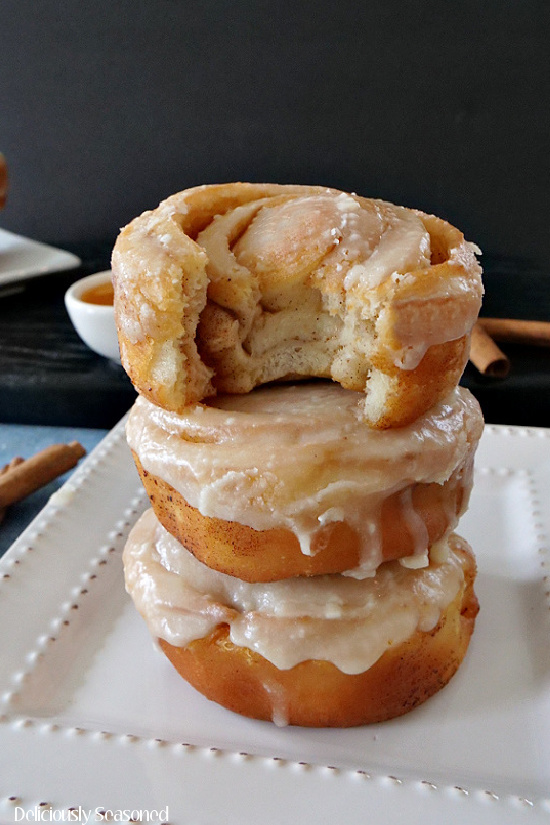

Honey Bunss

Hokkaido milk bread Honey Bunsls
When you bite into that tender, spiraled cinnamon-scented bread, it doesn't matter who you are, where you're from, or whether you cook or not...you know you're eating a beautifully made Honey Buns. The nearly commercial-level fluffiness of the rolls is achieved by using something called a tangzhong. To put it simply, it's basically a roux of precooked flour that helps add spring and lightness to the final dough.
Ingredients:
- Flour
- Whole Milk
- Yeast
- Eggs
- Brown Sugar
- Cinnamon
- Cream Cheese
- Powedered Sugar
- Vanilla
- Butter
Steps:
- Create the dough - Add the flour milk and butter together.
- Let the dough rise for atleast 2 hours.
- Flatten the dough and apply your butter to the dough
- Apply the mixed brown sugar and cinnamon.
- Roll the dough into a log.
- Using a string, slice the dough first into 3 equally sized slices, and then 12 equally sized slices from the 3 slices.
- Place the rolls into a baking dish, and let proof for 40 minutes
- Bake the Honey Bunss for 20 Minutes
- While baking combine the Powdered Sugar, Milk, Creamcheese and Vanilla in a bowl to create the glaze
- Glaze the rolls and enjoy hot!